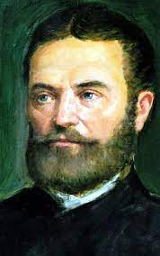

Bolyai János

Családi háttere és életútja
Emléktábla a szülőház falán
"Az 1802. év 12. havának 15. napján, itt született Bolyai Bolyai János, a magyar Euklides, Bolyai Bolyai Farkasnak, a Tentamen mély gondolkozású szerzőjének fia. Minek az emlékezetére száz év multán a Ferencz József Tudományegyetem mathematikai és természettudományi kara állítá e követ.
Apai nagyszülei, Bolyai Gáspár és pávai Vajna Krisztina révén magyar-székely, anyai nagyszülei, árkosi Benkő József és Bachmann Júlia által magyar-szász származású. Kolozsváron született, ahol szülőháza ma is látható, pár lépésre a város főterétől. Szülei Bolyai Farkas matematikus és író, illetve Benkő Zsuzsanna első gyermekeként született, egyetlen húga kisgyermek korában meghalt. Már gyermekkorában jelét adta nem mindennapi képességeinek. Hétévesen németül és hegedülni kezdett tanulni. Eleinte apja, majd a marosvásárhelyi kollégium felső osztályos diákjai tanították. 1814-ben, azaz tizenkét évesen íratták be a kollégiumba, ahol rögtön a negyedik osztályba került, és 1817-ben évfolyamelsőként tette le a záróvizsgát.
Bolyai Farkasnak az volt az elképzelése, hogy fiát a göttingeni egyetemre küldi, ahol ő maga is tanult, és ehhez barátja, az akkor már világhírű Gauss segítségét kérte.[14] Mivel Gauss a levélre nem válaszolt, Bolyai János 1818-ban a bécsi hadmérnöki akadémiára felvételizett. Taníttatásának költségeit báró Kemény Miklós vállalta, utóbb báró Kendeffy Ádám is hozzájárult. A választott intézményt illetően elég hamar csalódnia kellett: matematikát csak az első két évben tanultak, és számtalan olyan kötelezettségnek kellett eleget tennie, amelyek untatták. Ebben az időben kezdte el a párhuzamosok tanulmányozását; a matematika mellett a másik kedves időtöltése a zene volt. Az akadémiát 1822 szeptemberében kiváló eredménnyel fejezte be, ezt követően mérnökkari tisztjelöltként még egy évig a katonai építészmérnökök szaktantárgyait tanulta. 1823-ban alhadnagyi rangban a temesvári erődítési igazgatóságra küldték, ahonnan matematikai felfedezéseivel kapcsolatban azt írta édesapjának, hogy: „Semmiből egy ujj más világot teremtettem. 1826 áprilisától pedig az aradi erődítési igazgatóságon dolgozott, ahol 1827-ben főhadnaggyá léptették elő. 1827 végén–1828 elején betegségét követően Marosvásárhelyre utazott lábadozni, de 1828. második felében is sokat szenvedett a maláriától. 1828-ban Nagyváradon, 1829-ben Szegeden végzett katonai felméréseket. 1831 májusától Lembergben, a galíciai főhadparancsnokság lembergi kerületi műszaki és erődítési igazgatóság mérnöktisztjeként szolgált másodosztályú kapitányi rangban, majd 1832-ben Olmützbe helyezték. Útban szolgálati helye felé balesetet szenvedett, amelynek következtében több mint egy hónapig agyrázkódással ápolták.[17]
1833-ban betegsége miatt nyugdíjazását kérte, amit a „kilátással a későbbi visszahelyezésre” megjegyzéssel kapott meg.[8] Ekkor visszatért Marosvásárhelyre, ahol özvegy édesapjával lakott, közös háztartásban. 1834-ben kiköltözött a család domáldi birtokára, ahol gazdálkodással foglalkozott, emellett újból nekilátott a matematikai kutatásoknak.[8][18] Gazdasszonya a kurtanemesi családból származó kibédi Orbán Rozália volt, aki két gyermeket is szült neki: Dénest (1837–1913) és Amáliát (1840–1893). 1845-ben Bolyai Farkas másnak adta bérbe a családi birtokot, mivel úgy találta, hogy fia elhanyagolja a gazdaságot, így 1846 elején János visszaköltözött Marosvásárhelyre. Ezzel a lépéssel anyagilag elég rossz helyzetbe került, mivel a nyugdíja alacsony volt.
1848-ban a magyar hadügyminisztérium felhívást tett közzé a szolgálaton kívüli és nyugalomba helyezett katonatisztek számára, hogy lépjenek be a honvédségbe; az erdélyi közvélemény is azt várta Bolyaitól, hogy katonai feladatot vállaljon. Bolyai, noha azonosult a forradalom törekvéseivel, betegsége miatt nem vállalta a hadi szolgálatot.
1849 májusában házasságot kötött élettársával, Orbán Rozáliával; ezt előzőleg a katonatisztek számára előírt kaució hiánya miatt nem tudta megtenni. Júniusban levelet írt Kossuth Lajosnak, amelyben felajánlotta szolgálatait a kormánynak, amelytől azt várta, hogy az ország jóléte érdekében megvalósítja az ő elképzeléseit; a beadvány további sorsa nem ismert, elképzelhető, hogy Bolyai végül is nem küldte el.
1852-ben elvált feleségétől és egy bérelt szobába költözött. 1860 januárjában tüdőgyulladást és agyhártyagyulladást kapott, de azt megelőzően is hosszasan betegeskedett. 1860. január 27-én halt meg. Két nap múlva a katonai egyenruhájában, de jeltelen sírba temették el. A marosvásárhelyi református egyház halotti anyakönyvébe ezt írták: „Bolyai János, nyugalm. Ingenieur Kapitány – meghalt agy- és tüdőgyulladásban. – Híres, nagy elméjű matematikus volt, az elsők között is első. Kár, hogy nagy talentuma használatlanul ásatott el.
Hagyatéka – Bolyai Farkaséval együtt – nagyrészt a marosvásárhelyi Teleki–Bolyai Könyvtárban, valamint a Magyar Tudományos Akadémia Könyvtár és Információs Központ Kézirattárának különgyűjteményei között mint önálló Bolyai-gyűjtemény található.
Műveinek magyar nyelvű kiadásai
1. A térnek absolut igaz tudománya, a mely független Euklides XI. axiomájától ; ezt követi a kör geometriai quadratutárja ez axioma helytelen voltának esetében, fordította Rados Ignác, Budapest, MTA Mathematikai és Physikai Társulat, 1897
2. Appendix, a tér tudománya, Akadémiai Kiadó, Budapest, 1977, ISBN 963-05-1512-1
3. Fogalmazványok a Tanhoz, illetőleg az Üdvtanhoz, Ambrus Hedvig Mária, Deé Nagy Anikó és Vakarcs Szilárd közreműködésével szerkesztette és bevezetéssel ellátta Benkő Samu, Kolozsvár, Erdélyi Múzeum-Egyesület, 2003, ISBN 973-8231-27-2